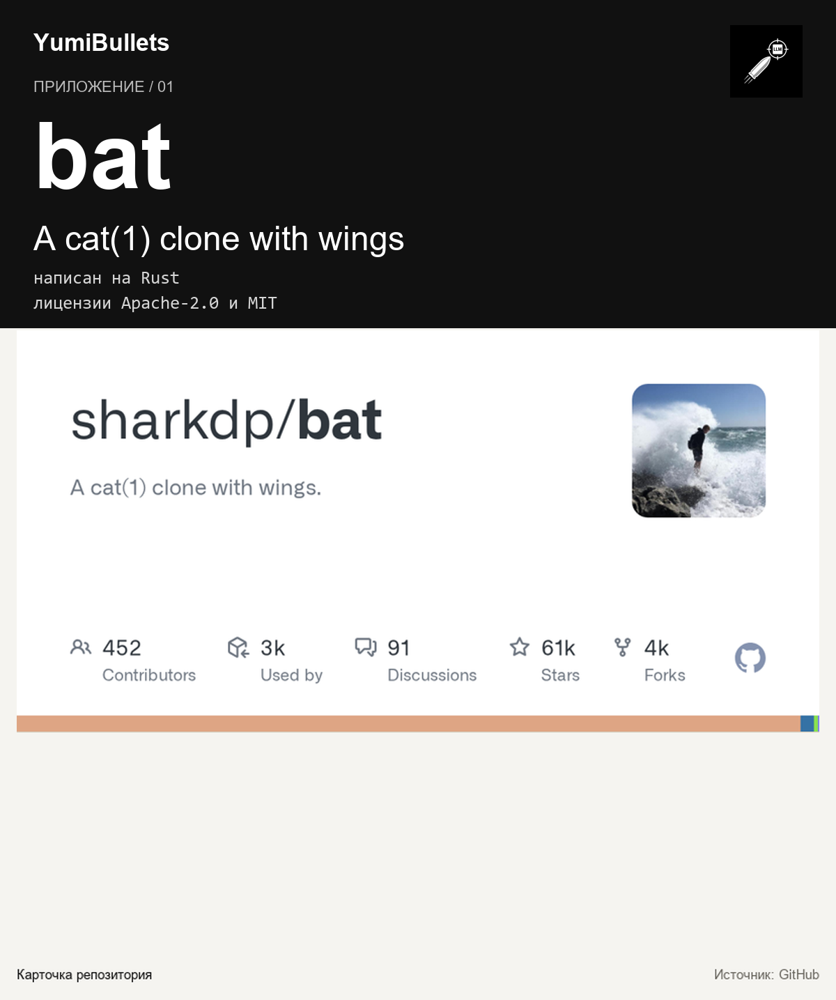

bat: чтение файлов в терминале с подсветкой, установка и первый сценарий
Читать конфиги, скрипты и логи прямо в терминале удобно, пока не понадобится разобраться в структуре: приходится всматриваться в каждую строку или уходить в редактор. Ниже —…